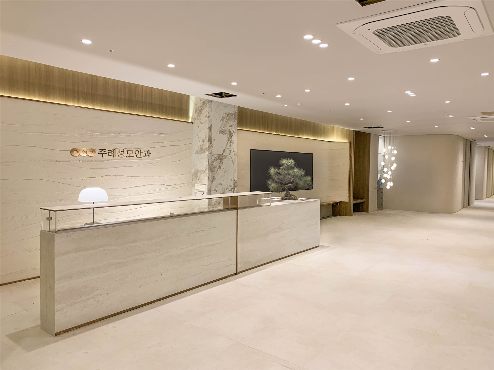

Online Consultation
진료 전 궁금한 점을 남겨주세요
상담 내용은 비밀글로 보호되며, 관리자 확인 후 답변드립니다.

ONLINE CONSULTATION
온라인 상담 게시판
상담 목록을 불러오는 중입니다.
ONLINE CONSULTATION
온라인 상담
진료와 내원에 관해 궁금한 내용을 적어주세요.
상담 내용은 비밀글로 보호되며, 관리자 확인 후 답변드립니다.

ONLINE CONSULTATION
상담 목록을 불러오는 중입니다.
ONLINE CONSULTATION
진료와 내원에 관해 궁금한 내용을 적어주세요.
궁금한 점을 편하게 물어보세요
일반 안내이며 진단을 대신하지 않습니다. 개인정보는 입력하지 마세요. 전화 문의